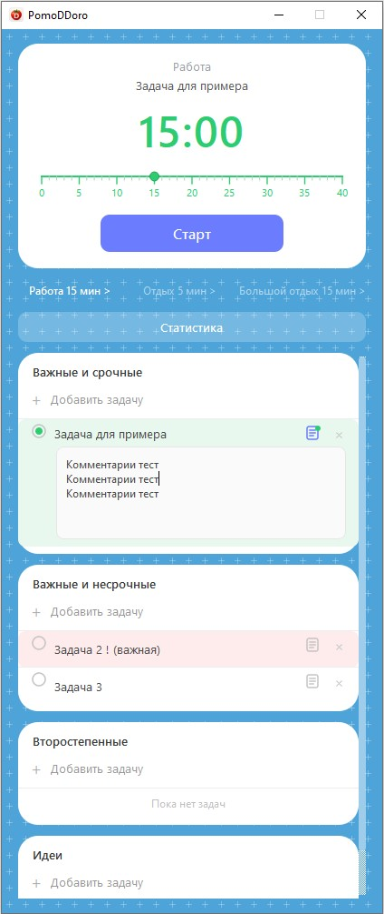
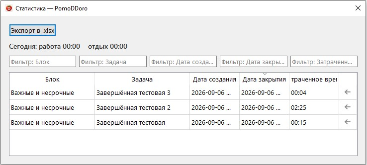

PomoDDoro
работай с фокусом
Pomodoro-таймер с планировщиком задач, матрицей приоритетов и статистикой затраченного времени.

Возможности PomoDDoro
Приложение помогает не только соблюдать интервалы Pomodoro, но и организовать задачи и учитывать фактически затраченное время.
Pomodoro-таймер
Настраивайте продолжительность работы и отдыха и переключайтесь между ними прямо из приложения.
Планировщик задач
Распределяйте задачи по четырём блокам в зависимости от их важности и срочности.
Выделение важных задач
Добавьте «!» в название задачи — и она будет выделена красным среди остальных задач.
Возврат закрытых задач
Случайно закрыли задачу? Её можно восстановить из окна статистики с помощью стрелки справа.
Учёт затраченного времени
Если задача была закрыта вне активного таймера «Работа», приложение предложит указать фактически затраченное на неё время.
Статистика
Просматривайте историю задач и затраченное время в отдельном окне статистики.
Фильтрация задач
В окне статистики можно фильтровать записи, чтобы быстро найти нужные задачи.
Напоминание о завершении работы
После окончания таймера «Работа» окно начинает мерцать, предлагая продлить работу или перейти к отдыху.
Экспорт в Excel
Экспортируйте статистику затраченного времени в формат XLSX для дальнейшего анализа.
Интерфейс приложения
Все основные инструменты находятся в одном окне: таймер, текущая задача, статистика и четыре блока планирования.
Работайте с задачами, а не просто с таймером
Выберите задачу и запустите рабочий интервал. Активная задача отображается непосредственно в области таймера.
- четыре категории задач;
- перетаскивание задач между блоками;
- комментарии к задачам;
- настройка рабочего интервала и отдыха;
- видимый текущий прогресс таймера.

Контролируйте затраченное время
В окне статистики собрана история выполненных задач и времени, которое было на них потрачено.
- фильтрация записей;
- просмотр времени по каждой задаче;
- восстановление случайно закрытой задачи;
- экспорт данных в XLSX.
Окно статистики затраченного времени
Матрица приоритетов
Разделяйте задачи по важности и срочности, чтобы понимать, чему уделить внимание прямо сейчас.
🔴 Важные и срочные
Задачи, требующие немедленного внимания.
🟡 Важные, но не срочные
Долгосрочные цели и стратегические задачи.
🟢 Второстепенные
Задачи, которые можно выполнить позже или делегировать.
⚪ Идеи
Заметки, гипотезы и идеи, которые пока не нашли своего места.
Системные требования
- ОС: Windows 10 / 11
- Разрядность: x64
- .NET: .NET Framework 4.8+
- Тип: портативное приложение, установка не требуется
- Для экспорта в Excel требуется Microsoft Excel или совместимый редактор, например LibreOffice Calc.
Попробуйте PomoDDoro
Скачайте последнюю версию бесплатно и попробуйте работать с задачами более осознанно.